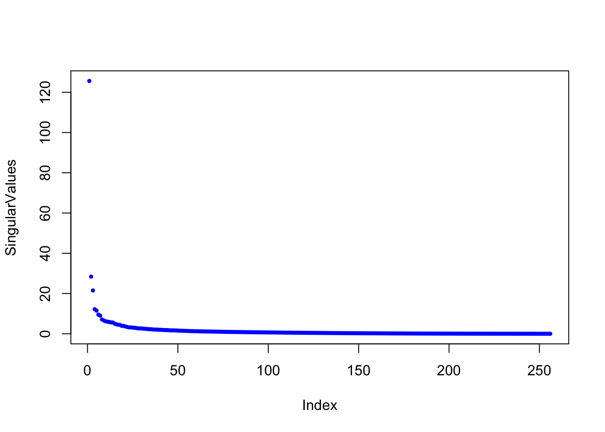

Section 22 Exam 1 Review
22.1 Overview
Our first exam covers sections 1.1 - 2.3 in Lay’s book.This corresponds to Problem Sets 1-4.
- I will hand it out right away, even a few minutes early, so you can start right on time.
- You must turn it in by 9:35 (for the 8:30 class) and 10:45 for the 10:50 class). No exceptions. The next class needs to come in and get started.
- No calculators are allowed, and none are needed.
- If row reductions are needed, they will be easy (integer) calculations, and there will not be many.
- It will be closed book but you can bring a 3" x 5" notecard with notes written on both sides. These notes should be hand written by you. You do not need to turn in the note card with the exam.
- There will be some basic calculations, but the problems will focus more on the ideas than on the calculations.
- I will ask some problems that are very similar to homework problems, Edfinity problems, and examples from class or the videos.
- I will ask other problems that are somewhat different from things you have done. On these, you are to apply your knowledge in a slightly new setting to demonstrate an even higher mastery of the material.
- You will be allowed to re-write one problem to earn back half of the points that you lost. This will be due the class period after I hand the exam back.
- The exam is worth 12% of your course grade as outlined in the syllabus.
22.1.1 Vocabulary and Concepts
You should understand these concepts and be able to read and use these terms correctly (see also the important definitions):
- elementary row operations
- REF and RREF and pivot positions
- linear combination
- span
- linear independence
- homogeneous and nonhomogeneous equations
- Understand the geometric relationship between the solutions to \(Ax = 0\) and \(Ax=b\)
- Understand Theorem 4 in Section 1.4 which says that the following are equivalent (they are all true or are all false) for an \(m \times n\) matrix \(A\)
- For each \(b\) in \(\mathbb{R}^m\), \(A x = b\) has a solution
- Each \(b\) in \(\mathbb{R}^m\) is a linear combination of the columns of \(A\)
- The columns of \(A\) span \(\mathbb{R}^m\)
- \(A\) has a pivot in every row.
- The columns of \(A\) are linearly independent if and only if \(Ax=0\) only has the trivial solution
- Understand Theorem 8 in Section 1.7: if you have more than \(n\) vectors in \(\mathbb{R}^n\) they must be linearly dependent.
- linear transformations
- the matrix of a linear transformation
- One-to-one and onto
- Matrix Multiplication
- Matrix Inverses
- The Invertible Matrix Theorem
22.1.2 Skills
You should be able to perform these linear algebra tasks.
- Identify linear systems from nonlinear systems
- Make the augmented matrix from a set of equations
- Row reduce a system of equations into Row Echelon Form (REF) and Reduced Row Echelon Form (RREF)
- Write the solution set to \(Ax=b\) as a parametric vector equation.
- Convert back and forth between systems of equations, vector equations, and matrix equations.
- Compute the matrix-vector product \(Ax\)
- Determine whether a set of vectors is linearly dependent or independent
- Find a dependence relation among a set of vectors
- Decide if a set of vectors span \(\mathbb{R}^n\)
- Manipulate matrix vector products using: \(A(x + y) = Ax + Ay\) and \(A(c x) = c A x\)
- Determine if a function \(T: \mathbb{R}^n \to \mathbb{R}^m\) is linear.
- Find the matrix of a linear transformation \(T\).
- find a matrix inverse
- solve equations using matrix inverses
22.2 Practice Problems
22.2.1
I have performed some row operations below for you on a matrix \(A\). Write out the complete set of solutions to \(A \mathsf{x} = {\bf 0}\). \[ A= \begin{bmatrix} 1& 2& 0& 2& 0& -1 \\ 1& 2& 1& 1& 0& -2 \\ 2& 4& -2& 6& 1& 2 \\ 1& 2& 0& 2& -1& -3 \\ \end{bmatrix} \longrightarrow \begin{bmatrix} 1& 2& 0& 2& 0& -1\\ 0& 0& 1& -1& 0& -1\\ 0& 0& 0& 0& 1& 2\\ 0& 0& 0& 0& 0& 0\\ \end{bmatrix} \]
22.2.2
I have performed some row operations below for you on a matrix \(B\). \[ B= \begin{bmatrix} 1& 1& 0 \\ 0& 1& 1 \\ 2& 1& 2 \\ 1& -1& 1 \\ 2& 3& 1 \\ \end{bmatrix} \longrightarrow \begin{bmatrix} 1& 0& 0 \\ 0& 1& 0 \\ 0& 0& 1 \\ 0&0&0 \\ 0&0&0 \\ \end{bmatrix} \]
Describe the solutions to the equation \(B \mathsf{x} = {\bf 0}\).
Fill in the boxes: the transformation \(T(\mathsf{x}) = B\mathsf{x}\) is a linear transformation from \(\mathbb{R}^{\square}\) to \(\mathbb{R}^{\square}\).
Are the columns of \(B\) linearly independent or dependent?
Do the columns of \(A\) span \(\mathbb{R}^5\)?
Is the transformation \(T\) one-to-one? Is it onto?
22.2.3
I want to know if it is possible to write \(\mathsf{w}\) as a linear combination of the vectors \(\mathsf{v}_1, \mathsf{v}_2, \mathsf{v}_3\) below. Write down, but do not solve, a matrix equation that would solve this problem. Your answer should be of the form \(A \mathsf{x} = \mathsf{b}\), where I can clearly see what \(A, \mathsf{x}\), and \(\mathsf{b}\) are. I should also be able to tell how many unknowns there are. \[ \mathsf{v}_1 = \left[ \begin{matrix} 1 \\ 2 \\ 3 \\ 4 \\ \end{matrix}\right] , \quad \mathsf{v}_2 = \left[ \begin{matrix} 1 \\ 0 \\ 1 \\ 0 \\ \end{matrix}\right] , \quad \mathsf{v}_3 = \left[ \begin{matrix} 1 \\ 1 \\ 0 \\ -2 \\ \end{matrix}\right] , \quad \mathsf{w} = \left[ \begin{matrix} 1 \\ -8 \\ -11 \\ -24 \\ \end{matrix}\right] . \]
22.2.4
Describe all vectors that are not in the span of the columns of the matrix \(A\) below: \[ A= \begin{bmatrix} 1& 2& 4 \\ -3& -5& -11\\ 1& 1& 3 \\ \end{bmatrix} \]
22.2.5
The matrix below is \(3 \times 3\) but the third column is missing. Add a nonzero third column so that the columns of \(A\) are linearly dependent and add a 3rd column so that the columns of \(A\) are linearly independent. Briefly describe your strategy. \[ \begin{bmatrix} 1& 0 & \quad \\ 0& 1& \quad \\ 2& 2& \quad \\ \end{bmatrix} \qquad\qquad \begin{bmatrix} 1& 0 & \quad \\ 0& 1& \quad \\ 2& 2& \quad \\ \end{bmatrix} \]
22.2.6
In each case below, find the matrix of the linear transformation that is described, if you believe that the matrix exists. Otherwise, demonstrate that the transformation is not linear.
The transformation \(T\) is given by: \[T \left( \begin{bmatrix} x_1 \\ x_2 \\ \end{bmatrix}\right) = \begin{bmatrix} x_1 + x_2 \\ 2 x_1 \\ -x_2 \\\end{bmatrix}. \]
The transformation \(T\) is given by: \[T \left( \begin{bmatrix} x_1 \\ x_2 \\ x_3 \end{bmatrix} \right)= \begin{bmatrix} x_1 + x_2 + x_3 \\ x_1 x_2 \\ -x_2 + 2 x_3 \end{bmatrix}. \]
22.2.7
Write the following systems of equations in vector and matrix form.
\[ \begin{array} {ccccccccccc} 5 x_1 &+& 3 x_2 &+& x_3 &+& 11 x_4 &-& x_5 &=& 10 \\ 4 x_1 &+& x_2 &+& 3 x_3 &+& 2 x_4 &+& 6 x_5 &=& 11 \\ - x_1 &+& 3 x_2 &-& 2 x_3 &+& x_4 &+& 6 x_5 &=& 12 \\ \end{array} \]
22.2.8
Let \(\mathsf{v}_1, \mathsf{v}_2, \mathsf{v}_3, \mathsf{v}_4\) be the vectors in the columns of the matrix \(A\) below. \[ A = \left[ \begin{array}{cccc} 1 & 1 & 3 & 1 \\ 2 & 0 & 2 & 3 \\ 1 & 1 & 3 & 1 \\ -1 & 0 & -1 & 0 \end{array} \right] \longrightarrow \left[ \begin{array}{cccc} 1 & 0 & 1 & 0 \\ 0 & 1 & 2 & 0 \\ 0 & 0 & 0 & 1 \\ 0 & 0 & 0 & 0 \end{array} \right] \] a. Are the vectors \(\mathsf{v}_1, \mathsf{v}_2, \mathsf{v}_3, \mathsf{v}_4\) linear independent or dependent? If they are linearly dependent, please give a dependence relation among them. b. Describe the span of the vectors \(\mathsf{v}_1, \mathsf{v}_2, \mathsf{v}_3, \mathsf{v}_4\) inside of \(\mathbb{R}^4\)?
22.2.9
Find a solution to \(A \mathsf{x}=0\) that no one else in the class has. \[ A = \begin{bmatrix} 1 & 1 & 1 & 1 & 4 \\ 2 & 0 & 4 & 1 & 4 \\ 1 & 1 & 1 & 1 & 4 \\ 1 & 0 & 2 & 1 & 3 \end{bmatrix} \longrightarrow \begin{bmatrix} 1 & 0 & 2 & 0 & 1 \\ 0 & 1 & -1 & 0 & 1 \\ 0 & 0 & 0 & 1 & 2 \\ 0 & 0 & 0 & 0 & 0 \end{bmatrix} \]
22.2.10
fixed! in an earlier version the image was from a linear transformation, this one is not.
Explain why it is not possible for a linear transformation \(T: \mathbb{R}^2 \to \mathbb{R}^2\) to transform my hous as seen below:

22.2.11
Consider the following vectors in \(\mathbb{R}^3\): \[ \mathsf{v}_1 = \begin{bmatrix} 1 \\-1 \\1 \\ \end{bmatrix}, \mathsf{v}_2 = \begin{bmatrix} 0 \\ 1 \\ 1 \\ \end{bmatrix}, \mathsf{v}_3 = \begin{bmatrix} 3 \\ -1 \\ 5 \\ \end{bmatrix}. \]
Determine whether the set \(\{\mathsf{v}_1, \mathsf{v}_2, \mathsf{v}_3\}\) is linearly independent or linearly dependent. If it is dependent, give a dependence relation. If it is independent show the work that justifies this conclusion.
Find a vector \(\mathsf{b}\in \mathbb{R}^3\) that is not in \(\mathsf{span}(\mathsf{v}_1,\mathsf{v}_2,\mathsf{v}_3)\). Justify your answer.
If \(T: \mathbb{R}^3 \to \mathbb{R}^3\) is a linear transformation such that \(T(\mathsf{v}_1) = \mathsf{v}_2\) and \(T(\mathsf{v}_2) = \mathsf{v}_3\) then compute \(T(\mathsf{v}_3)\).
22.2.12
Below is the row reduction of the augmented matrix for the equation \({\mathsf{A}}x = \mathsf{b}\). \[ [{\mathsf{A}}\mid \mathsf{b}] = \left[\begin{array}{ccccc|c} 1 & 1 & -1 & 1 & 4 & 2 \\ 2 & -1 & -5 & -3 & -3 & 2 \\ 1 & 1 & -1 & 0 & 3 & 1 \\ 1 & 1 & -1 & 1 & 4 & 2 \\ \end{array}\right] \longrightarrow \left[\begin{array}{ccccc|c} 1 & 0 & -2 & 0 & 1 & 2 \\ 0 & 1 & 1 & 0 & 2 & -1 \\ 0 & 0 & 0 & 1 & 1 & 1 \\ 0 & 0 & 0 & 0 & 0 & 0 \\ \end{array}\right] \hskip5in \]
Give the general solution to \({\mathsf{A}}x = \mathsf{b}\) in parametric form.
Describe geometrically the general solution you gave in part (a) ( e.g., a single point in \(\mathbb{R}^3\), a line in \(\mathbb{R}^2\), a plane in \(\mathbb{R}^4\), a three dimensional space in \(\mathbb{R}^9\)).
If \(T\) is the linear transformation whose matrix is \({\mathsf{A}}\), then $T: ^{} ^{} $ (fill in the blanks).
Determine if these statements are true T, false F, or that there is not enough information, I, to decide. No justification needed.
- \(T\) is one-to-one
- \(T\) is onto
- \({\mathsf{A}}x = \mathsf{b}\) has a solution for all \(\mathsf{b}\) in the codomain.
- \({\mathsf{A}}x = \mathsf{b}\) has exactly one solution for some \(\mathsf{b}\) in the
- The columns of \({\mathsf{A}}\) are linearly independent.
- The columns of \({\mathsf{A}}\) span \(\mathbb{R}^4\).
- The 3rd column of \({\mathsf{A}}\) is in the span of the first 2 columns of \({\mathsf{A}}\).
22.2.13
Given that \(A,B,C\) are invertible matrices, solve the following matrix equation for \(X\) \[ C (A + X) B^{-1} = I \]
22.2.14
We’ve seen a few problems that ask you to interpret the meaning of matrix multiplication: the rental car problem, the rain-sunshine matrix, and the graves and pottery matrix. Here is another problem in which the goal is to interpret the meaning of matrix multiplication.
Here is a graph of the network of domestic airline flights in Korea. They are not located geographically in the plane, but there is a connection if there is a direct flight from one airport to the other.
 It is common to study these networks using a matrix called the adjacency matrix. Here is the adjacency matrix of this network.
A = rbind(c(0,1,0,0,1,0,0,0,0,0,0,0),c(1,0,1,1,0,1,0,0,0,0,0,0),
c(0,1,0,0,1,0,1,1,1,1,1,0),c(0,1,0,0,0,1,0,0,0,0,0,0),
c(1,0,1,0,0,1,0,0,0,0,0,0),c(0,1,0,1,1,0,1,1,1,1,0,1),
c(0,0,1,0,0,1,0,0,0,0,0,0),c(0,0,1,0,0,1,0,0,0,0,0,0),
c(0,0,1,0,0,1,0,0,0,0,0,0),c(0,0,1,0,0,1,0,0,0,0,0,0),
c(0,0,1,0,0,0,0,0,0,0,0,0),c(0,0,0,0,0,1,0,0,0,0,0,0))
A## [,1] [,2] [,3] [,4] [,5] [,6] [,7] [,8] [,9] [,10] [,11] [,12]
## [1,] 0 1 0 0 1 0 0 0 0 0 0 0
## [2,] 1 0 1 1 0 1 0 0 0 0 0 0
## [3,] 0 1 0 0 1 0 1 1 1 1 1 0
## [4,] 0 1 0 0 0 1 0 0 0 0 0 0
## [5,] 1 0 1 0 0 1 0 0 0 0 0 0
## [6,] 0 1 0 1 1 0 1 1 1 1 0 1
## [7,] 0 0 1 0 0 1 0 0 0 0 0 0
## [8,] 0 0 1 0 0 1 0 0 0 0 0 0
## [9,] 0 0 1 0 0 1 0 0 0 0 0 0
## [10,] 0 0 1 0 0 1 0 0 0 0 0 0
## [11,] 0 0 1 0 0 0 0 0 0 0 0 0
## [12,] 0 0 0 0 0 1 0 0 0 0 0 0- Look at the location of the 0s and 1s in this matrix in the context of the network and decide when there is a 1 in the matrix.
- Let \(v\) be the vector in \(\mathbb{R}^{12}\) consisting of all 1s. Multiply \(Av\) and decide what the entries of this vectors tell us about the network.
- Square the matrix, i.e., compute \(A^2\). This amounts to dotting the rows of \(A\) with the columns of \(A\). Decide what the entries of \(A^2\) mean in terms of the network.
- Multiply \(A^2\) by the all 1s vector \(v\). What do the entries of that vector mean.
22.2.15
Suppose that you are given four linearly dependent vectors, \(\mathsf{v}_1, \mathsf{v}_2, \mathsf{v}_3, \mathsf{v}_4\), in \(\mathbb{R}^n\). And suppose that you have a linear transformation \(T: \mathbb{R}^n \to\mathbb{R}^m\).
- State precisely what it means for \(\mathsf{v}_1, \mathsf{v}_2, \mathsf{v}_3, \mathsf{v}_4\) to be linearly dependent.
- Apply \(T\) to your answer to a and use it to show that \(T(\mathsf{v}_1), T(\mathsf{v}_2), T(\mathsf{v}_3), T(\mathsf{v}_4)\) must also be linearly dependent in \(\mathbb{R}^m\). This problem shows that linear transformations send dependent vectors to dependent vectors.
22.2.16 Challenge
Prove that if \(\mathsf{v}_1, \mathsf{v}_2, \mathsf{v}_3, \mathsf{v}_4\) are linearly independent in \(\mathbb{R}^n\) and \(T: \mathbb{R}^n \to \mathbb{R}^m\) is one-to-one, then \(T(\mathsf{v}_1), T(\mathsf{v}_2), T(\mathsf{v}_3), T(\mathsf{v}_4)\) are linearly independent in \(\mathbb{R}^m\)
Note: I won’t ask anything this hard on the exam but we are going to start doing proofs like this after exam 1.
22.3 Solutions to Practice Problems
22.3.1
The parametric vector form of the solution is
\[\begin{bmatrix} x_1 \\ x_2 \\ x_3 \\ x_4 \\ x_5 \\ x_6 \\ \end{bmatrix} = s \begin{bmatrix} -2 \\ 1 \\ 0 \\ 0 \\0 \\ 0 \end{bmatrix} + t \begin{bmatrix} -2 \\ 0 \\ 1 \\ 1 \\0 \\ 0 \end{bmatrix} u \begin{bmatrix} 1 \\ 0 \\ 1 \\ 0 \\-2 \\ 1 \end{bmatrix}\]
22.3.2
- There is one solution: \(\mathsf{x} = \begin{bmatrix} 0 \\ 0 \\ 0 \end{bmatrix}\).
- The transformation \(T(\mathsf{x}) = B\mathsf{x}\) is a linear transformation from \(\mathbb{R}^{3}\) to \(\mathbb{R}^{5}\).
- Independent
- Do not span
- One-to-one but not onto.
22.3.3
\[ \begin{bmatrix} 1 & 1 & 1 \\ 2 & 0 & 1 \\ 3 & 1 & 0 \\ 4 & 0 & -2 \end{bmatrix} \begin{bmatrix} x_1 \\ x_2 \\ x_3 \end{bmatrix} = \begin{bmatrix} 1 \\ -8 \\ -11 \\ -24 \end{bmatrix} \]
22.3.4
We want to find all target vectors \(\mathsf{b}\) such that \(A \mathsf{x} = \mathsf{b}\) is inconsistent. So we want the augmented matrix \(\begin{bmatrix} A \,| \, b \end{bmatrix}\) to have a pivot in the last column. \[ \left[ \begin{array}{ccc|c} 1& 2& 4 & b_1 \\ -3& -5& -11 & b_2\\ 1& 1& 3 & b_3 \\ \end{array} \right] \longrightarrow \left[ \begin{array}{ccc|c} 1& 2& 4 & b_1 \\ 0& 1& 1 & 3b_1 +b_2\\ 0& -1& -1 & -b_1+b_3 \\ \end{array} \right] \longrightarrow \left[ \begin{array}{ccc|c} 1& 2& 4 & b_1 \\ 0& 1& 1 & 3b_1 +b_2\\ 0& 0& 0 & 2b_1+b_2+b_3 \\ \end{array} \right] \] So the set of target vectors that are not in the span of the columns of \(A\) are the vectors \[ \begin{bmatrix} b_1 \\ b_2 \\ b_3 \end{bmatrix} \qquad \mbox{where} \qquad 2b_1 + b_2 + b_3 \neq 0. \]
22.3.5
In the first case, add a vector that is in the span of the first two vectors. For example, you might add the sum of the two vectors. In the second case, add a vector that is not in the span of the two vectors. Add something that row reduces to the identity.
22.3.6
- This is a linear transformation with \[A = \begin{bmatrix} 1 & 1 \\ 2 & 0 \\ 0 & -1 \end{bmatrix}.\]
- This is not a linear transformation because \[ 2 \, T \left( \begin{bmatrix} 1 \\ 1 \\ 1 \end{bmatrix} \right)= 2 \begin{bmatrix} 3 \\ 1 \\ 1 \end{bmatrix} = \begin{bmatrix} 6 \\ 2 \\ 2 \end{bmatrix} \quad \mbox{while} \quad T \left( \begin{bmatrix} 2 \\ 2 \\ 2 \end{bmatrix} \right)= 2 \begin{bmatrix} 6 \\ 4 \\ 2 \end{bmatrix}. \]
22.3.7
Vector Form: \[ x_1 \begin{bmatrix} 5 \\ 4 \\ -1 \end{bmatrix} + x_2 \begin{bmatrix} 3 \\ 1 \\ 3 \end{bmatrix} + x_3 \begin{bmatrix} 1 \\ 3 \\ -2 \end{bmatrix} + x_4 \begin{bmatrix} 11 \\ 2 \\ 1 \end{bmatrix} + x_5 \begin{bmatrix} -1 \\ 6 \\ 6 \end{bmatrix} = \begin{bmatrix} 10 \\ 11 \\ 12 \end{bmatrix} \] Matrix Form: \[ \begin{bmatrix} 5 & 3 & 1 & 11 & -1 \\ 4 & 1 & 3 & 2 & 6 \\ -1 & 3 & -2& 1 & 6 \end{bmatrix} \begin{bmatrix} x_1 \\ x_2 \\ x_3 \\ x_4 \\ x_5 \end{bmatrix} = \begin{bmatrix} 10 \\ 11 \\ 12 \end{bmatrix} \]
22.3.8
- \(-\mathsf{v}_1 - 2\mathsf{v}_2 + \mathsf{v}_3 + 0 \mathsf{v}_4 = 0\).
- \(\mathrm{span}(\mathsf{v}_1,\mathsf{v}_2,\mathsf{v}_3,\mathsf{v}_4)\) looks like a copy of \(\mathbb{R}^3\) sitting inside \(\mathbb{R}^4\). In other words, is 3-dimensional subset of \(\mathbb{R}^4\).
22.3.9
The general solution is \[ \begin{bmatrix} x_1 \\ x_2 \\ x_3 \\ x_4 \\ x_5 \end{bmatrix} = s \begin{bmatrix} -2 \\ 1 \\ 1 \\ 0 \\ 0 \end{bmatrix} + t \begin{bmatrix} -1 \\ -1 \\ 0 \\ -2 \\ 1 \end{bmatrix}. \] My solution is \[77,083,679 \begin{bmatrix} -2 \\ 1 \\ 1 \\ 0 \\ 0 \end{bmatrix} - 72,159,215 \begin{bmatrix} -1 \\ -1 \\ 0 \\ -2 \\ 1 \end{bmatrix}. \]
22.3.10
Hint: Look at the relation of the peak of the house to \(\mathsf{e}_1\) and \(\mathsf{e}_2\).
22.3.11
This one might be too much row-reduction for an in-class exam. Not sure. But these ideas are important.
- They are dependent. Find a nonzero solution to \(A x = 0\) to get a dependence relation.
- You can augment with a symbolic vector \([b_1,b_2,b_3]\) and row reduce. This will give you a formula telling you what conditions on \(b_1,b_2,b_3\) are needed for the equation to be inconsistent. You could also guess a strange choice for \(b\) and row reduce to show that it is not in the span.
- Use the dependence relation.
22.3.12
- Two free variables, so it is a plane in \(\mathbb{R}^5\).
- \(\mathbb{R}^5 \to \mathbb{R}^4\).
- F, F, F, F, F, F, T. Not (col3) = -2(col1) + (col2), which can be seen from the RREF.
22.3.13
Multiply on the left by \(C^{-1}\) and on the right by \(B\): \[ \begin{array}{rcl} C (A + X) B^{-1} &=& I \\ C^{-1}C (A + X) B^{-1} &=& C^{-1} I \\ I (A + X) B^{-1} &=& C^{-1} \\ (A + X) B^{-1} &=& C^{-1} \\ (A + X) B^{-1} B &=& C^{-1}B \\ (A + X) I &=& C^{-1}B \\ A + X &=& C^{-1}B \\ X &=& C^{-1}B - A \\ \end{array} \]
22.3.14
Will discuss it in class on Wednesday.
22.3.15
There exists scalars \(c_1, c_2, c_3, c_4\), not all equal to 0, so that \[ c_1 \mathsf{v}_1 + c_2 \mathsf{v}_2 + c_3 \mathsf{v}_3 + c_4 \mathsf{v}_4 = {\bf 0}. \]
Apply \(T\) to both sides of this equation and use the linearity properties: \[ \begin{array}{rcl} T(c_1 \mathsf{v}_1 + c_2 \mathsf{v}_2 + c_3 \mathsf{v}_3 + c_4 \mathsf{v}_4) &=& T({\bf 0}) \\ c_1 T(\mathsf{v}_1) + c_2 T(\mathsf{v}_2) + c_3 T(\mathsf{v}_3) + c_4 T(\mathsf{v}_4) &=& {\bf 0} \\ \end{array} \] This is a dependence relation for \(T(\mathsf{v}_1), T(\mathsf{v}_2), T(\mathsf{v}_3), T(\mathsf{v}_4)\) using the same scalars, which we know are not all 0, so these vectors are also linearly depedent. Note that we used the fact that \(T({\bf 0}) = {\bf 0}.\)